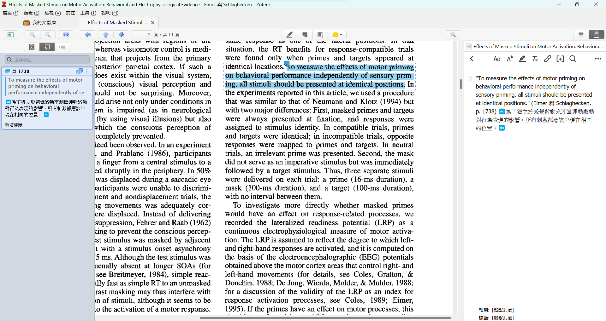

2 演繹推理
如何在閱讀中運用演繹推理，辨識需要證據支持或否證的研究問題及假設。
本書一開始就提到，科學論文及專業書藉是科學研究者取得研究問題的重要來源。充實個人知識含量是每個人要做的自我修行，本書及援用的課程能幫助的是如何有效彙整可用的知識，以及如何使用你所彙整的知識判斷可歸入個人知識庫的文獻。
小節 1.2 曾簡單介紹最古典的演繹推理~三段論證的規則，現在我用改編自心理學者Peter Wason的推理測驗，測試看看你需不需要「脈絡資訊」(contextual information)來解決測驗問題：
你面前的桌子上有四張卡片，每張卡片朝著你的這一面分別印著「數字6」、「玫瑰花的素描圖像」、「幾何多邊形」、「天竺鼠的攝影像」等圖樣。研究人員告訴你每張卡片的另一面都有圖樣，每張卡片的兩面所印的圖樣規律是「如果一張卡片的一面是數字，則另一面是動物。」
你如果要確認這個規律，只能檢查其中兩張卡片，那麼要選擇那兩張卡片翻面檢查呢？先想好你的答案，記下來稍後再對答案。如果這個題目感到有點難，那麼看看以下用接近台灣多數人生活經驗改寫的題目。
你是在某家24小時營業的便利商店打工的店員，你值班時經常有顧客來買香煙，你清楚只能販賣香煙給滿20歲的顧客。有天換班前，你看到兩位剛結完帳，看起來很年輕的陌生顧客離開櫃檯，一人手裡拿包香煙，一人手裡拿著現做冰品，兩個人都不是你見過的熟客。你想問準備下班的新來同事，剛才有沒有先詢問剛才買煙的客人真實年齡？經常在值班時段來買東西的兩位年輕熟客來到櫃檯要求趕快結帳，你知道其中一位已經成年，一位還未成年，但是不知道這次他們要買什麼？有沒有買香煙的需要？
你如果要和同事各自應付次上四位客人的其中兩位，同時確認香煙有沒有賣給不該買的顧客，你要應付那兩位呢？你能不能回答是要詢問那兩位顧客？先想好你的答案再來看解答1。
2.1 形式邏輯本位的演繹推理
如果你能正確回答第二個問題，卻答錯第一個問題。讓我們重新以三段論證來檢視演繹推理的規則。
第一個問題裡要檢查的其中一張卡片是「數字6」，如果背面是「天竺鼠」就能確認符合規律。第二個問題要問的第一位顧客就是剛才結帳買走香煙的年輕顧客，道理也是一樣。這點相信任何能唸到大學的讀者都能理解，可說是人最早學會的確證原則。
接著來看兩個問題裡要檢查的第二項。第一個問題裡要檢查的另一張卡片是「玫瑰花」，確定另一面不是「數字6」，才能確認「如果一張卡片的一面是數字，則另一面是動物。」的規律是正確的。有不少人可能會問，為何不檢查另外兩張卡片？那麼你可以想一下第二題，你會很容易接受第二個問題情境裡，另一個要問的是準備要結帳的未成年顧客要不要買香煙。大家應該都能理解，無論成年顧客要不要買香煙，都沒有違反「未成年不可買煙」的法律。在第一題的情境裡，研究人員所設定的規則如同現實世界的法律，另外兩張卡片如同成年顧客或買一般商品的顧客一樣，查問他們的真實年紀或要買的東西，都不會違反法律。這種很少意識卻在有脈絡的情境中，能用來檢測規律有沒有被違反的案例可稱為反證原則。
雖然三段論只是眾多演繹推理方法的其中一種，卻是能檢視一種主張是否具備科學意義的基本方法。構成一項科學主張的客體，也就是原因與結果，必須使確證原則與反證原則可並存運作。然而與科學無關的各種現實事務，一般人都很容易接受的主張，通常只能檢測確證原則的證據，缺乏檢測反證原則的條件。這種只考慮確證原則的傾向，就是在其他心理學課程常會提到的確認偏誤。實驗研究法的長期學習主題之一，就是能將想探討的研究問題，轉化為可以確證亦可以反證的假設。
演繹推理的過程是提出可以檢驗的科學假設，還需要結合歸納推理才能運作能生產科學知識的流程。包括實驗心理學，各種科學研究經常這樣搭配使用歸納推理和演繹推理：
- 研究者可能會先觀察到一個現象(歸納推理)，然後形成一個可以用來解釋該現象的假說(演繹推理)。
- 接著，研究者設計實驗來驗證這個假說(演繹推理)，並根據實驗結果來修正或強化先前的假說 (歸納推理)。
接下來我們要再談一次科學心理學知識更新循環，這次加入了貫串本書的範例研究，讓讀者在這一章學習如何進行文獻回顧，以及從回顧中提出有效的研究假設。
2.2 解讀示範文獻
心理學再現危機的影響層面及根源依然是個討論中的主題，我們在此專注在心理學實驗室裡，心理學研究者都會關心，極可能影響實驗結果的因素：非新手參與者(nonnaiveté participant)。因為大學生人口增加，以及遠距實驗平台的普及，許多人都有參與多樣心理學實驗的經驗。儘管研究者會儘可能調整實驗內容，減低參與者對研究作業的熟悉感。然而因為作業方式的普遍性，以及有大學學歷的參與者熱衷參與各式實驗而累積的經驗，有可能導致大部分驗證原始研究結果的心理學實驗，無法得到一致的研究結果。
由於決策判斷(decision making)實驗是社會心理學大型再現研究專案中，結果最不盡如人意的項目 (Klein et al., 2014)， Chandler et al. (2015) 特別關切非新手經驗削弱再現結果的程度。他們從專案中挑選12項決策行為實驗，透過線上平台邀請參與者分兩個梯次，參與同一項實驗，並且操作兩個梯次之間的相距時間、施測平台異同、以及被分派的實驗條件異同。評估再現程度的指標是比較每項實驗的兩個梯次效果量差異(difference of effect size)[^02-002]。
Zwaan et al. (2018) 認為由於認知心理學實驗在大型再現研究專案所得到的再現結果相對較佳 [citation]，而且不同於決策判斷實驗通常採用組間比較，多數實驗採用組內比較。需要透過實驗評估非新手經驗降低再現結果效果量的程度，因此選擇九個認知心理學的經典實驗，涵蓋知覺/動作、記憶和語言三個領域。與 Chandler et al. (2015) 一樣透過線上平台，招募參與者分兩個梯次參與。
以上是本書以九個認知心理學實驗為學習材料的主要背景，從這個單元到 單元 4 ，我們將探討研究者如何思考非新手經驗的影響及形成可測試的研究假設。 單元 5 到 單元 7 分別介紹這三個領域的知識背景，了解九項實驗的發現如何形塑現今天的認知心理學知識內容。
2.3 科學研究的演繹推理
讓我們複習前一個單元看過的科學研究流程圖，只是只看右半邊，由此談談 Chandler et al. (2015) 及 Zwaan et al. (2018) 如何認定非新手經驗為需要探討的問題，以及如何設定測試非新手經驗影響效果的假設。
研究問題是在「推論」到「假設或學說」兩個狀態之間的產物。Chandler et al. (2015) 及 Zwaan et al. (2018) 都是在認同多數心理學研究無法穩定再現的前提下，鎖定非新手經驗的影響是需要探討的問題。兩群研究者的知識背景不同，對於所知悉的心理學實驗過程中，非新手經驗的來源或內涵有不一樣的看法。決策判斷實驗主要透過提供情境故事(cover story)給參與者閱讀，再讓參與者對特定問題以圈選選項或標記量表分數，所以參與者對於問卷格式的熟練、題目設計的理解、以及作實驗的個人動機等，都在Chandler等人的問題意識之中。認知心理學的實驗程序能減少參與者的主觀認知所造成的練習效應，所以Zwaan等人認為刺激材料的相似程度是最可能改變非新手經驗的條件。
2.4 設定可被否證的研究假設
科學研究流程圖中的「假設或學說」放在寫作論文的場景，是寫出能讓有能力理解的讀者明白的研究問題與假設。小節 2.1 裡討論的演練推理規則，是讀者能以個人的理解能力，由字裡行間讀出作者的假設所具備的確證原則及否證原則。因此，設定研究假設的能力包括兩個層次，一面是能從文獻內容讀出測試假設的確證條件及否證條件，另一面是寫出的假設能讓理解能力與你相近或更佳的讀者，能指認你所設定的確證條件及否證條件。
綜合所能找到的研究方法教材，以下列出有效的研究假設應具備的設定條件：
- 可檢驗性: 研究假設必須是可檢驗的，可以從文字描述知曉具體的資料收集與分析方法。
- 明確性: 研究假設應該以清晰、簡潔的語言陳述，避免使用模糊或含糊不清的詞彙。
- 相關性: 研究假設必須與研究問題相關，並且指出解決或澄清研究問題的方式。
- 具體性: 研究假設應該具體說明符合理論預測，會觀察到的變項關係及測量結果，特別是充分符合預測的研究條件。
2.5 輔助工具及技巧
最後一節介紹開源文獻管理軟體zotero，這套軟體能幫助研究者收集整理要轉化出科學問題的文獻，官方及核心使用者開發的附加元件(plugins)，能協助研究者筆記文獻重點及個人想法，以及輔助撰寫報告時，編輯要引用的文獻及參考書目。接著分享形成研究問題及假設的建議及技巧，透過案例展示以及習作練習，讓讀者從閱讀 Zwaan et al. (2018) 的重製實驗及原始文獻，接觸專業研究者如何進行演繹推理。
2.5.1 回顧文獻的輔助工具
zotero是由美國喬治梅森大學的歷史與新媒體中心(Roy Rosenzweig Center for History and New Media，CHNM)開發維護的文獻管理軟體。讀者透過這一段開頭的超連結，開啟官方網站，可直接下載及安裝主程式以及網路瀏覽器外掛元件2，依照使用者個人習慣設定主程式3，就可以透過外掛元件匯入從網路搜尋平台到的文獻書目資訊，像是google scholar4，能取得全文pdf的文獻，也可以匯入指定資料夾5。若是讀者會在不只一種個人設備使用zotero，建議在官方網站註冊一個雲端帳號，就能在不同設備之間同步收錄的文獻書目及自建筆記。
閱讀文獻並筆記重點6，是演繹推理活動的開始。zotero有許多由開發團隊及各地精熟使用者開發的附加模組，本書作者群推薦要學習實驗研究法的讀者，除了主程式已內建的畫線筆記功能7，也可以使用zotfile管理及匯出已建立好的筆記8，整合多種翻譯引擎的pdf translate9，還有能以已收錄的文獻書目，搜尋有引用關係的新舊文獻inciteful10。
2.5.2 筆記技巧及知識管理
- 如何從研究論文萃取重要資訊
> 反向思考知識更新循環
- 運用zotero附加模組彙整筆記技巧
- 由思考成果尋找合適的筆記技巧
- 由思考成果設計筆記原則2.6 演繹推理習作
2.6.1 設定研究問題
2.6.2 設定研究假設
wikipedia 傳統版 Wason, P. C. (1966). “Reasoning”. In Foss, B. M. (ed.). New horizons in psychology. Vol. 1. Harmondsworth: Penguin. LCCN 66005291. 改編版見 Cosmides, L.; Tooby, J. (1992). “Cognitive Adaptions for Social Exchange” (PDF). In Barkow, J.; Cosmides, L.; Tooby, J. (eds.). The adapted mind: Evolutionary psychology and the generation of culture. New York: Oxford University Press. pp. 163–228. ISBN 978-0-19-506023-2.↩︎
(1)點擊內文連結或搜尋zotero官網，開啟後點選下載Download按鈕進入下載頁面。
(2)網站會自動偵側個人設備的作業系統及瀏覽器版本，提供相容的主程式與連結器的下載及安裝連結，建議兩件都要下載安裝。
(3)WINDOWS版主程式安裝成功，會在桌面出現圖標，可直接點擊啟動主程式。
(4)連結器安裝成功時，通常會在網址列旁邊看到元件圖示。
↩︎
(1)安裝完成後，未安裝其他附加元件之前，先做三項基本設定。由主程式選項的編輯選擇偏好設定，可開啟如以下畫面的設定視窗，預設是一般子視窗，建議除了群組的項目方塊，其他方塊都取消勾選。
(2)如果有註冊zotero雲端帳號，切換到同步子視窗，設定已註冊的帳號密碼，之後開啟zotero有連上網路時，會自動同步。
(3)如果有需要切換主程式介面語言，到進階子視窗可更改設定。
↩︎
(1)使用網路搜尋或內文連結開啟google scholar首頁，如果有登入個人的google帳號，會在首頁左上角看到我的個人學術檔案以及我的圖書館。
(2)以下以“青少年憂鬱症的相關成因”示範如何搜索文獻。將想搜尋的關鍵詞輸入搜尋列。
(3)這次找到一共有876項結果。
(4)如果想要更細一點，可以在最左那一欄，按自己的要求篩選。
(5)限縮搜尋範圍到2019年後，可以看出搜尋結果變得更少，然後就可以找自己感興趣的文獻點進去查看。
(6)改用英文搜尋，會發現更多搜尋結果。
(7)進一步用引號“”分解關鍵詞，能有效減少搜尋結果。
(8)如果發現感興趣的文獻可以選擇儲存，加入自己的圖書館。
(9)儲存時能建立或加入已建立的閱讀清單。
(10)由google scholar首頁進入我的圖書館，可瀏覽已經收錄的書目。
↩︎
(1)找到要取得書目的文獻DOI並複製。
(2)進到zotero頁面，點選🪄圖示，開啟輸入視窗。
(3)將DOI填入輸入視窗。
(4)書目匯入成功後，按滑鼠右鍵，點選「找到可用的pdf」。
(5)點選後跳轉至此頁面，搜尋pdf中。
(6)打勾表示有可用pdf，zotero會自動下載pdf檔案。
(7)回到zotero主程式視窗，出現pdf圖示代表已完成下載。 ↩︎
↩︎
(1)從zotero主程式視窗，選取一個已經將連結放入其中的文獻文件。
(2)將游標移到想檢視的文獻書目，點擊滑鼠的右鍵，可看到如下圖的選單畫面。由選單開啟pdf檢視器。
(3)點擊pdf檢視器分頁，即可檢視文件內容。
(4)檢視器的畫線功能可標記你感興趣或是你覺得是重點的一句話。
(5)畫線子選單提供多種畫筆顏色標記，還可以對標記範圍紀錄個人註解。
(6)點擊下圖用紅筆圈起來的圖示，可開啟畫記清單。
(7)畫記清單裡紀錄可持續編輯，也可以加入自己建立的筆記當中。
(8)點選如以下畫面右側，紅圈標示的加號圖示，就會建立附加於這條書目的筆記。
(9)將游標移到加號並點擊滑鼠的右鍵，開啟筆記建立選單。
(10)可以選擇新增項目筆記來建立空白項目筆記，或是選擇擇由標註來新增項目筆記以已經建立的畫記建立筆記，如下圖示範。
(11)新增項目筆記建立的空白項目筆記如以下畫面，可自行打字編輯。
(12)或者如以下連續畫面示範，把畫記清單裡的項目拖到項目筆記裡。
(13)之後要找自己之前畫的重點在哪裡，可以點擊左側畫記清單的項目，或者右側筆記裡的條目，就會跳到pdf文件裡的重點畫線。

↩︎
(1)只要pdf檔案的文字可以直接複製，zotero的突顯文字功能可直接畫線並做註解，選擇區域可擷取特定區域畫面，並對擷取畫面做註解。如下圖的示範。
(2)要將畫線註解進一步編輯，除了拖放每一條畫線到項目筆記，也可以用由標註來新增筆記功能，將所有畫線及擷圖匯出為獨立的項目筆記。
(3)要將所有畫線與擷圖匯出到zotero之外，使用其他工具進一步編輯加工時，使用匯出筆記功能，就能將包含這些條目的項目筆記匯出為獨立檔案。
(4)匯出格式有Markdown、HTML、以及Zotero RDF三種，推薦Markdown適合最多編輯場景。
↩︎
(1)到Zotfile下載網頁，下載的檔案副檔名為.xpi的安裝檔案。
(2)從Zotero主程式選單點選工具 > 附加元件，開啟附加元件管理頁面。
(3)將第一步下載的Zotfile 安裝檔案拖曳到附加元件管理頁面，按下安裝即可。

(4)安裝完畢後，請重新啟動 Zotero ，就可以在工具選單之下看到Zotfile Preferences。
(5)設定Zotfile。初次設定會出現如以下畫面的訊息視窗，按下OK即可。
(6)如果還未準備好與個人平板裝置同步，可依照以下連續畫面示範取消同步功能。
(7)如果曾經在其他pdf閱讀軟體畫記重點，可使用Zotfile的功能，將重點匯入zotero，如以下連續畫面示範。
↩︎
(1)安裝Zotero PDF Translate~搜尋或點擊這套附加元件的GitHub 網頁，如以下畫面。
(2)在網頁中下滑，就會在網頁的右側看到 Releases 的字樣，點進去後即可下載，如以下畫面紅框處。
(3)下載之後，就可以在電腦中找到 “ zotero-pdf-translate.xpi ” 的檔案。
(4)開啟zotero附加元件管理頁面。如以下畫面示範。
(5)把先前下載的 xpi 檔案拖移進去，安裝成功如以下畫面。
(6)設定Zotero PDF Translate~開啟編輯的偏好設定，如以下畫面示範。
(7)切換到翻譯子頁面，即可選擇個人偏好的設定，如以下畫面示範。
↩︎
(1)搜尋或由zotero附加元件清單網頁，找到inciteful的github網頁，最新版安裝檔案的連結點擊Releases即可開啟。
(2)建議用滑鼠右鍵點選另存新檔，下載下圖的xpi檔案。安裝方法與前面介紹的Zotfile和translate一樣。
(3)inciteful的功能主要有兩種。下圖示範第一種Graph Search，檢視單一文獻被後來出版的論文引用的關聯資訊。圖中的示範書目是 Zwaan et al. (2018) 。
(4)有連上網路的話，會在預設網路瀏覽器開啟這篇文獻的資訊頁，包括目前被引用的狀況，有引用及被引用的論文書目連結。
(5)第二種功能Connect Papers是用至少兩篇論文為線索，查看至今有引用其中一篇論文的文獻關聯。下圖的示範書目是 (roedigerCreatingFalseMemories1995?) 與 Zwaan et al. (2018) 。
(6)因為 (roedigerCreatingFalseMemories1995?) 是經典的記憶研究，所以文獻引用網路相當壯觀。
↩︎